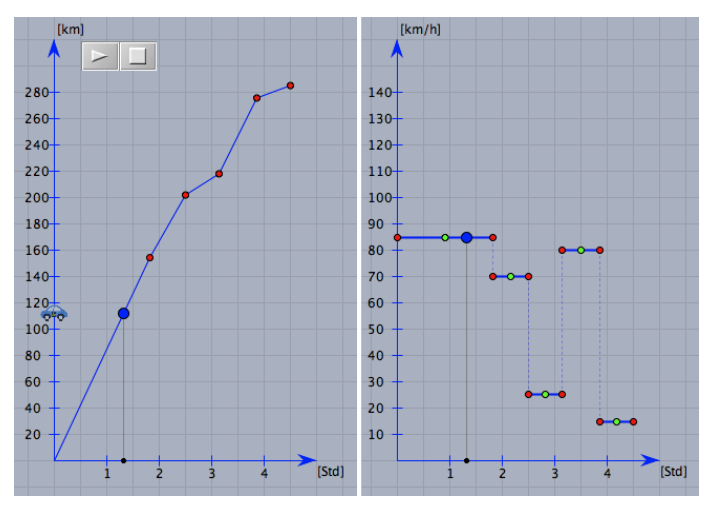

a) Beschreiben Sie, wie sich der Weg-Zeit-Graph ändert, wenn man die Balken im Geschwindigkeits-Zeit-Graphen ändert.
Diese Aufgabe wird im Unterricht besprochen.

b) Herr Paulsen möchte mit dem Auto am Wochenende an einen See fahren. Das sind $280\text{ km}$. Er möchte um 09:00 Uhr losfahren und um 13:30 Uhr ankommen. Er möchte insgesamt mindestens eine Stunde Pause machen und nicht schneller als $140\text{ km/h}$ fahren.
Probieren Sie verschiedene Möglichkeiten aus und zeichnen Sie zwei mögliche Weg-Zeit-Graphen. Wie viele Lösungen gibt es? Sind alle in der Praxis durchführbar? Zeichnen Sie die entsprechenden Geschwindigkeits-Zeit-Graphen.